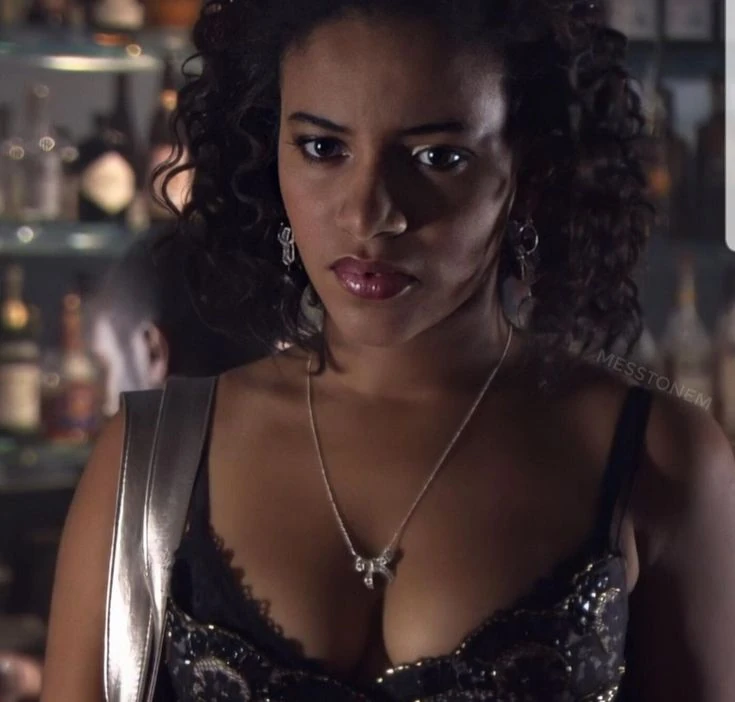

Personajes principales de la serie
Uno de los aspectos más interesantes de Skins es la variedad de personajes. Cada uno tiene una personalidad distinta y enfrenta sus propios problemas durante la historia. Lo que hace que sean tan atractivos es su profundidad y realismo, permitiendo al espectador conectarse con ellos de manera más emocional.
Algunos de los personajes más conocidos son:
- Tony Stonem: Es el líder del grupo en la primera generación. Es carismático, inteligente y tiene una personalidad dominante.
- Michelle Richardson: Es la novia de Tony en la primera generación. Es dulce, pero también tiene una personalidad fuerte.
- Sid Jenkins: Es el mejor amigo de Tony. Es tímido, inseguro y a menudo se siente eclipsado por Tony.
- Effy Stonem: Es la hermana menor de Tony. Aparece en ambas generaciones y es conocida por su personalidad misteriosa y rebelde.
- Jal Fazer: Es una talentosa clarinetista y es conocida por ser inteligente y responsable.

Muchos fans consideran que los personajes son una de las mejores partes de la serie, porque cada uno tiene una historia personal muy marcada.
Puedes ver más información sobre los personajes aquí:
Wiki de Personajes de Skins